The Hamiltonian
We assume a quantum mechanical system that can be described by the Hamiltonian
The first term
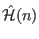 denotes the Hamiltonian of
a subsystem 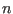
(e.g. an ion, or cluster of ions). The second term describes a bilinear interaction
between different subsystems
through the operators
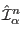, with
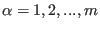. The operators
and
act in the subspace of the Hilbert space, i.e.
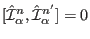,
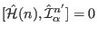 and
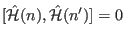
for 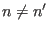10.
For example, in the case of a Heisenberg
exchange between magnetic ions we would identify the set of operators with
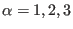 with the three components of the spin:
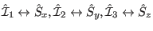.
The beauty of the analysis which follows is that it can be applied to
almost any Hamiltonian of the form (1). The analysis
of complex magnetic systems can thus be attempted by starting from a simple
form such as the Heisenberg model and by introducing, step-by-step, more
complexity into the model. For example, anisotropy and interactions with extended range can be introduced by modifying
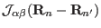, higher order operators can be
introduced by extending the index range for , and a complex single-ion term
may be added.
Another example for a Hamiltonian (1) is the problem of lattice dynamics, which can
be treated in the framework of this
formalism by identifying the operators
with the atomic displacements 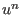. Here the index is not necessary and
refers to both, the atomic position index and the spatial coordinate of the displacement,
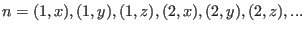. Note that this can be done, because the three spatial components of the
displacement operators commute with each other (in contrast to the components of the spin) and each displacement
component acts in its own subspace of the Hilbert space. The kinetic energy
will be part of the single ion term
. Allowing more complexity to the system,
both the spin and lattice degrees of freedom can be introduced and spin-phonon interactions can be
handled by the theory.
The main limitation of the approach is that it neglects fluctuations associated with phase
transitions and quantum disorder. We are primarily concerned, therefore, with excitations
associated with a well-ordered ground state.
Two special forms of the Hamiltonian (1), which have been implemented
are given in the following. Some other forms are also available, by programming
a single ion module the user may treat any type single ion Hamiltonian
.
Subsections